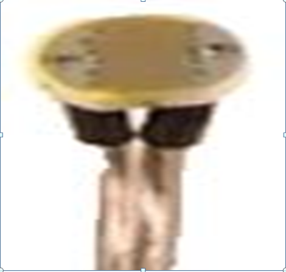

<html lang="ar" dir="RTL">
<head>
<title>المجس الضوئي</title>
<style>

.hi img{
border:4px solid black;
position:relative;
margin-top:120px;
margin-right:20px;
width:300; 
height:410;

}

.hi p{
float:left;
margin-top:120px;
margin-left:200px;
font-size:25px;

}


</style>
</head>
<body background="sss14.jpg">
<div class="hi">

<p>المجس الضوئي(LDR)<br>
هو عبارة عن عنصر يقوم باستشعار وجود الأجسام أو عدم وجودها بعدة طرق أهمها:<br> أ‌- استشعار وجود الجسم عن طرق قطع الإشارة وهو أكثر الأنواع استخداماً حيث يوضع العنصر المشع والمستقبل في صندوق بلاستيكي واحد حيث يقابل كل منهما الآخر في الوضع الطبيعي المستقبل يستقبل إشارة من المشع أما في حالة وجود جسم بينهما فهذا يعني أنه لا تصل إشارة إلى المستقبل.<br>ب‌- استشعار وجود الجسم عن طريق عكس الإشارة في هذا النوع من المجسات يوضع المشع والمستقبل على نفس المستوى من السطح حيث يستشعر بوجود الجسم عند انعكاس الشعاع من الجسم ويتم استقباله عن طريق المستقبل أما في حالة عدم وجود جسم فان المستقبل لا يستقبل إشارة.<br>تستخدم المجسات الضوئية بأنواعها بكثرة في الآلات المكتبية لاستشعار وجود الورق ومكان تعثره في آلات التصوير والطابعات.
<br>

</p><br>
<!--

<p>سرو توتم<br>
السعر:50<br></p>
-->
</div>


</body>
</html>